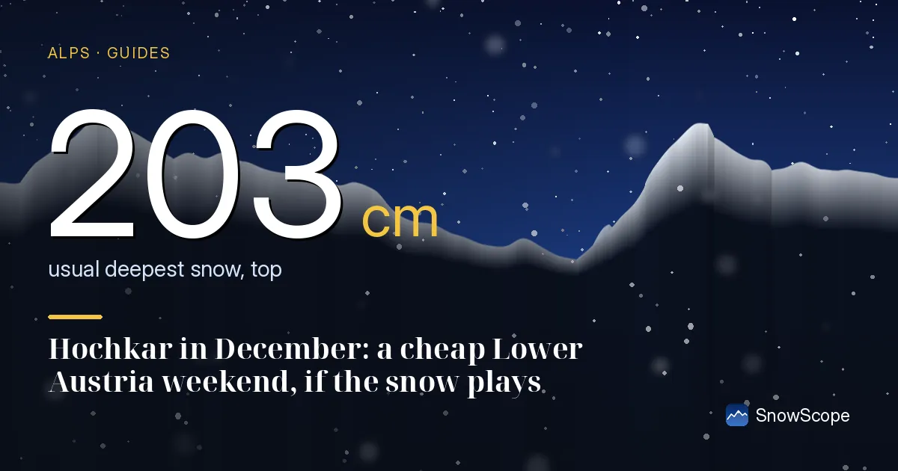

Hochkar in December: a cheap Lower Austria weekend, if the snow plays
Hochkar can work for a December weekend trip from Vienna, but snow is not guaranteed. On a typical 15 December, mid-mountain (1583 m) holds 38 cm, with 63 % of winters seeing 30 cm or more in the week of 15-21 December. The price side is straightforward: day tickets online start from EUR 32.90 on quiet dates.
See the live snow forecast for Hochkar in the SnowScope appSnow depth, powder alerts and the 3D map, free.
When December snow is thick enough
The Hochkar rises to 1788 m, the highest lift in Lower Austria. Across its 46 winters of records, the ground has never been bare at the base (1378 m) on 15 December, so there is always some snow. What counts is whether there is enough to ski.
Reliability shifts through the month. In the first week of December (1-7 Dec), only 43 % of winters had 30 cm or more at the base. By mid-December that share jumps to 52 %, and by Christmas week it reaches 61 %. At mid-mountain, the odds are better: 59 % by 8-14 December and 74 % by Christmas week.


Height makes the difference
The top of the mountain tells a different story. On a typical 15 December the peak (1788 m) holds 49 cm, against 32 cm at the base and 38 cm at mid-mountain. In 72 % of winters the top had 30 cm or more in the week of 15-21 December, rising to 80 % in Christmas week.
The base is the weak point. Thin years (1 in 10) see only 8 cm there on 15 December. If you go, ski the upper lifts and runs first, while coverage is best.
The long-term trend
December snow on this mountain has thinned. At mid-mountain, the average in the first 15 winters of the record (1980-81 to 1994-95) was 51 cm, but in the last 15 winters (2011-12 to 2025-26) it dropped to 29 cm. Last winter held only 2 cm on 15 December and 3 cm on Christmas Eve.
That matters for planning. A reliable December week here is now the exception. The window is Christmas week onwards, when older snow patterns still deliver 74 % odds of 30 cm at mid-mountain.
Cost and timing
The Hochkar uses fully dynamic pricing through its online shop. Adult day tickets in December 2026 ranged from EUR 32.90 on quiet dates to EUR 47.90 on busy ones. The official site says online prices are roughly 15 % cheaper than buying at the till.
There is no fixed multi-day pass price advertised, which makes sense: most visitors come for a day or a weekend. Decide in the same week you plan to go, watch the forecast and SnowScope, then book a quiet date online.
Lachtal: the alternative next door
Lachtal in Styria sits 50 km away, with a higher base (1572 m) and taller peak (2199 m). Its mid-mountain (1885 m) has 46 cm on a typical 15 December and 72 % of winters with 30 cm in the week of 15-21 December, slightly more reliable than Hochkar. A day ticket costs EUR 62.
For a cheap day trip from Vienna, Hochkar wins on price. For a weekend where snow is the priority, Lachtal's height gives better odds, though at higher cost.
How to make it work
Plan late, not in advance. Early December is a gamble; aim for the week before Christmas or later. Book online for a weekday when prices are lowest and snow forecast is firm.
Before you drive up, check the avalanche bulletin from Lawinenwarndienst Niederösterreich (lawinen.report) if you plan to leave the marked runs. The road is a mountain road: carry winter tyres after any snowfall.
Tips for skiers
- Watch the forecast for the week you are thinking of, not a month ahead. Thin Decembers are now common here; book only when SnowScope shows 30 cm or more at mid-mountain.
- Buy online and choose a quiet weekday. Dynamic prices are lowest when demand is low.
- Start on the upper lifts. The top of the mountain is the most reliable height in December.
- Bring winter tyres and check the avalanche bulletin if you go off-piste.
- If December looks thin, wait for January, when snow depth typically reaches 61 cm at mid-mountain.
About these numbers
Resort snow depths are the deepest snow on the resort's upper slopes on the date shown; they are estimates for an area, not a measurement at one point. Forecasts can change. Always read the official avalanche bulletin before going off-piste.
Official avalanche bulletins: Lawinenwarndienst Niederösterreich
Cite this report
For research, teaching or the press: the numbers and charts are free to reuse under CC BY 4.0 with this citation.
SnowScope (2026), Hochkar in December: a cheap Lower Austria weekend, if the snow plays, https://snowscope.app/blog/en/2026/11/hochkar-december-skiing-vienna-weekend-budget.html, accessed 2026-11-14
SnowScope (Atlas Labs). (2026, November 14). Hochkar in December: a cheap Lower Austria weekend, if the snow plays. SnowScope snow reports. https://snowscope.app/blog/en/2026/11/hochkar-december-skiing-vienna-weekend-budget.html
BibTeX
@misc{snowscope2026hochkardecemberskiingvie,
author = {{SnowScope (Atlas Labs)}},
title = {Hochkar in December: a cheap Lower Austria weekend, if the snow plays},
year = {2026},
month = nov,
howpublished = {\url{https://snowscope.app/blog/en/2026/11/hochkar-december-skiing-vienna-weekend-budget.html}},
note = {Published 2026-11-14 20:11 UTC; accessed 2026-11-14}
}· CC BY 4.0 · Methods, data and tools →
Hochkar: snow and temperature by height, this winter vs last (tools) →
Follow Hochkar
Free: a message when fresh snow is coming, and the forecast every morning.
More snow reports

Davos forecast for 23–29 November: 16 cm at the top, Thursday 26 November heaviest. Snow line sits high; best on Parsenn.

Courchevel gets 27 cm at the top 23–29 November, with Wednesday 25 as the heaviest day. Forecast from 16 November.

Avoriaz forecast for 23–29 November: 29 cm at the top (range 9–48 cm), 27 cm mid-mountain, 17 cm at base. Best days: 24, 25, 26, 29 November.